← 返回阅读库 · 原论文目录
论文讲解阅读文档 · 论文精读 · v245
开源第一！把后训练做到极致！GLM-5.3
视频时长 00:09:10；讲解文字 3,121 字符；提取讲解画面 198 张。按视频原顺序阅读，每段文字保留时间戳。
文字来自整段视频的自动语音转写，按自然停顿分段，并与 PPT / 论文页面 / 演示画面对齐。未将讲解压缩为摘要；术语、数字和口述公式请结合画面及原论文核对。 阅读稿已校正规范部分明确术语误识别；原始逐字稿和每处修改记录另行保留。
讲解画面为源视频截图（640×360），不是可编辑 PPT 文件。全片按每秒 2 帧扫描内容变化，逐步展开页保留；连续动画保留代表画面。清晰度受源视频限制。
下载完整资料包 · 含离线 HTML、PDF、Word、全部 PPT 画面和字幕。
原论文与材料
GLM-5.3: Frontier Coding with Emergent Cyber Capabilities · 下载完整 PDF（12 页）
官方网页全文，以下 PDF 为网页导出，并非官方论文 PDF。
按时间阅读
00:00:00–00:00:02 · 画面 001
 00:00:00–00:00:02 · 画面 001
00:00:00–00:00:02 · 画面 001太不可思议了，上周 GLM5.3 的技术报告和模型同步上线，与 DeepSeek 同台竞技。模型的底座和 5.2 完全一致，大小还是 743B，纯靠后训练。在 Terminal-Bench 上样指标整整翻了 6 倍，在最新的 Artificial Analysis 榜上与 Kimi K3 并列开源第一，还出现了安全能力的涌现，顺手挖出了其他开源项目共 2436 个真实漏洞。那本期视频六博士
00:00:02–00:00:06 · 画面 002
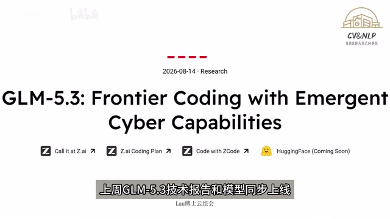
00:00:02–00:00:06 · 画面 00200:00:06–00:00:10 · 画面 003
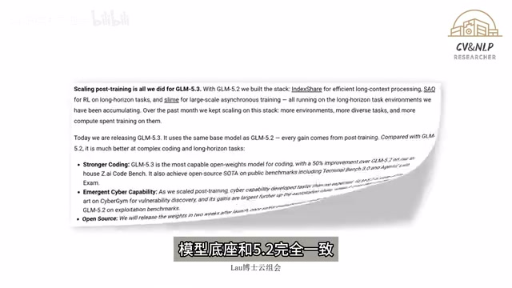
00:00:06–00:00:10 · 画面 00300:00:10–00:00:12 · 画面 004
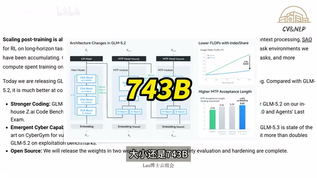
00:00:10–00:00:12 · 画面 00400:00:12–00:00:13 · 画面 005
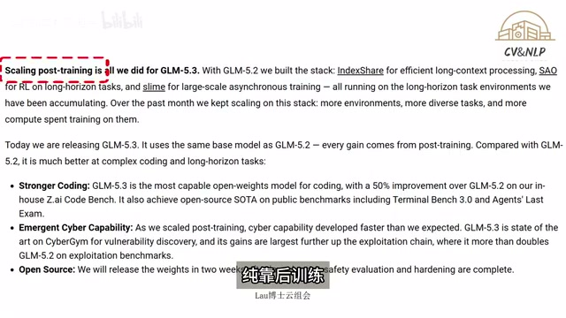
00:00:12–00:00:13 · 画面 00500:00:13–00:00:17 · 画面 006
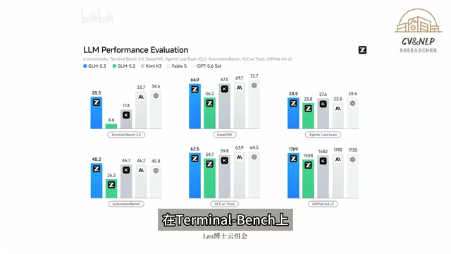
00:00:13–00:00:17 · 画面 00600:00:17–00:00:19 · 画面 007
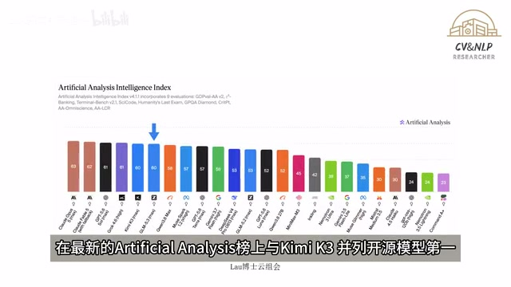
00:00:17–00:00:19 · 画面 00700:00:19–00:00:22 · 画面 008
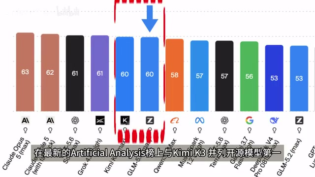
00:00:19–00:00:22 · 画面 00800:00:22–00:00:24 · 画面 009
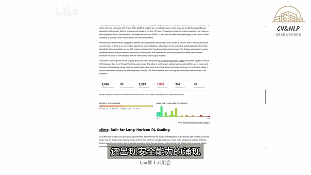
00:00:22–00:00:24 · 画面 00900:00:24–00:00:28 · 画面 010
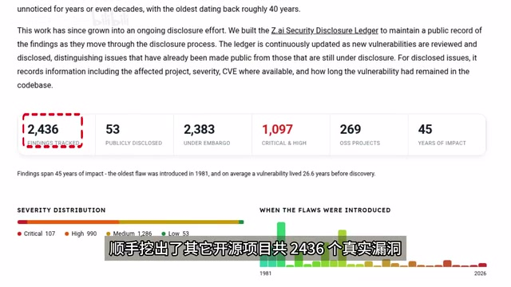
00:00:24–00:00:28 · 画面 01000:00:28–00:00:32 · 画面 011
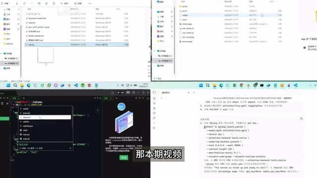
00:00:28–00:00:32 · 画面 011带着大家一起剖析这份刚刚发布的技术报告看看纯靠后训练还能走多远云组会论文精读系列后训练之王 GLM 5.3 来了同学们讲方法之前先快速过一下报告里最关键的两个指标 Terminal Bench 拿下 28.3 开源第一上一代只有 4.6 提升了整整 6 倍
00:00:32–00:00:33 · 画面 012
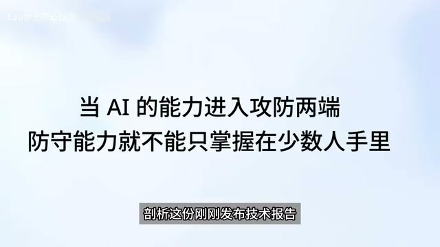
00:00:32–00:00:33 · 画面 01200:00:33–00:00:36 · 画面 013
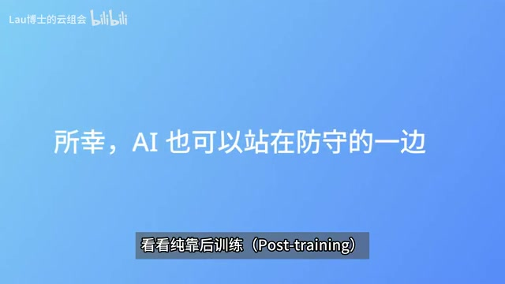
00:00:33–00:00:36 · 画面 01300:00:36–00:00:40 · 画面 014
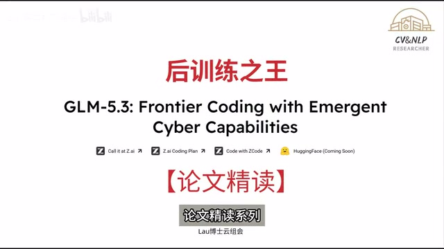
00:00:36–00:00:40 · 画面 01400:00:40–00:00:44 · 画面 015
00:00:40–00:00:44 · 画面 01500:00:44–00:00:45 · 画面 016
00:00:44–00:00:45 · 画面 01600:00:45–00:00:47 · 画面 017
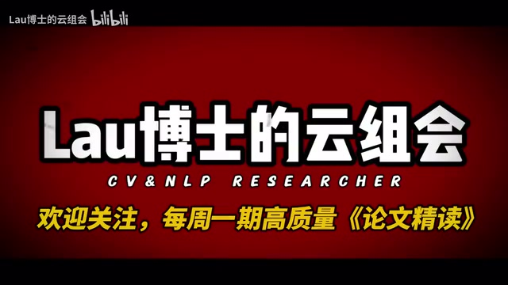
00:00:45–00:00:47 · 画面 01700:00:47–00:00:49 · 画面 018
00:00:47–00:00:49 · 画面 01800:00:49–00:00:50 · 画面 019
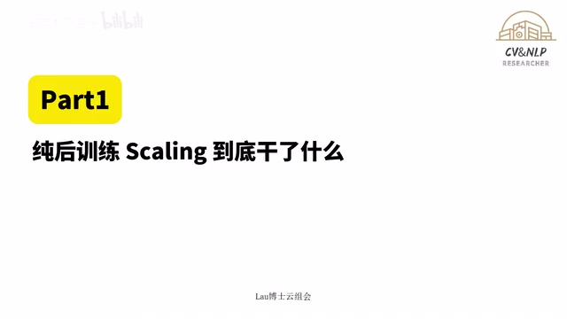
00:00:49–00:00:50 · 画面 01900:00:50–00:00:54 · 画面 020
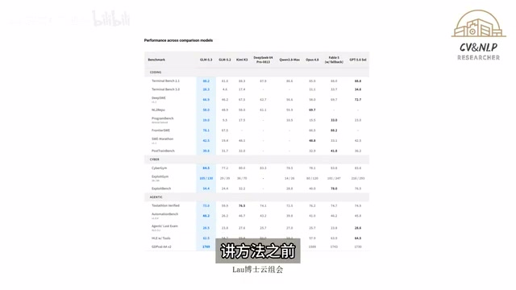
00:00:50–00:00:54 · 画面 02000:00:54–00:00:56 · 画面 021
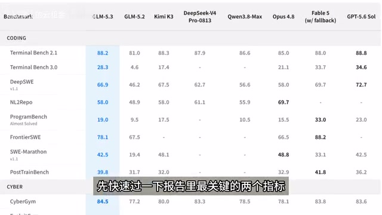
00:00:54–00:00:56 · 画面 02100:00:56–00:00:59 · 画面 022
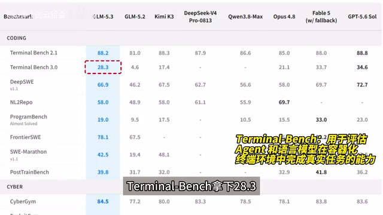
00:00:56–00:00:59 · 画面 02200:00:59–00:01:03 · 画面 023
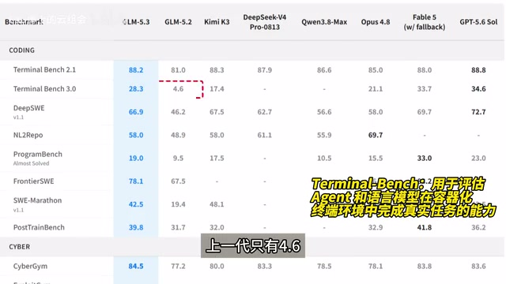
00:00:59–00:01:03 · 画面 023效率上 GLM 5.3 High 平均一个任务约 5 万 Token 做到了 Opus 4.8 Max 约 12 万 Token 的水平问题来了为什么光靠后训练就可以做到这么好的效果呢?技术报告里给出的答案可以拆成三层包括沿用 5.2 的训练商店套把环境规模化以及一条自动化造环境的流水线组合在一起完成了 5.3 这次史诗级的后训练我们一个个来讲
00:01:03–00:01:06 · 画面 024
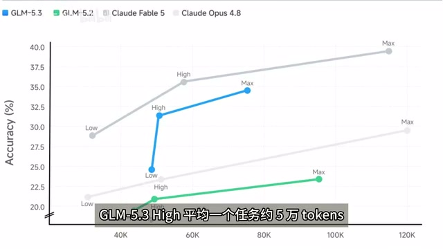
00:01:03–00:01:06 · 画面 02400:01:06–00:01:07 · 画面 025
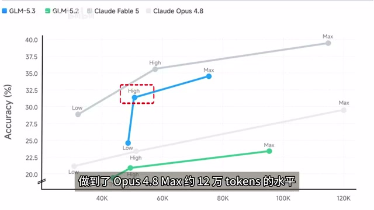
00:01:06–00:01:07 · 画面 02500:01:07–00:01:09 · 画面 026
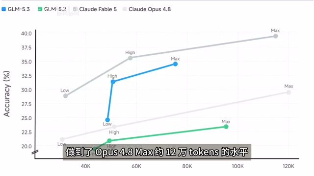
00:01:07–00:01:09 · 画面 02600:01:09–00:01:11 · 画面 027
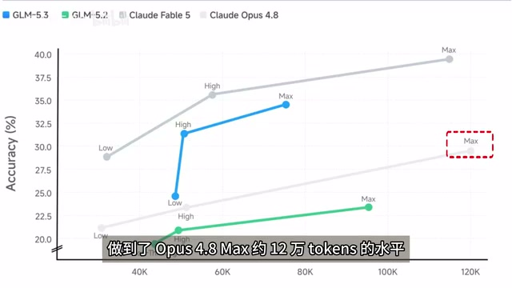
00:01:09–00:01:11 · 画面 02700:01:11–00:01:14 · 画面 028
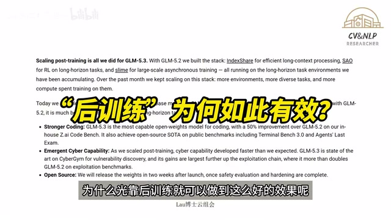
00:01:11–00:01:14 · 画面 02800:01:14–00:01:18 · 画面 029
00:01:14–00:01:18 · 画面 02900:01:18–00:01:21 · 画面 030
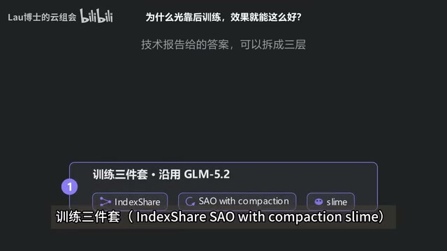
00:01:18–00:01:21 · 画面 03000:01:21–00:01:24 · 画面 031
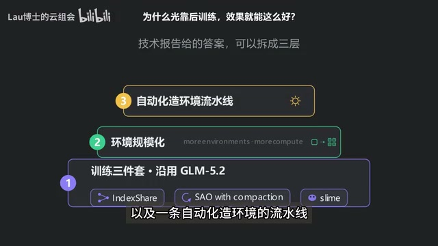
00:01:21–00:01:24 · 画面 03100:01:24–00:01:28 · 画面 032
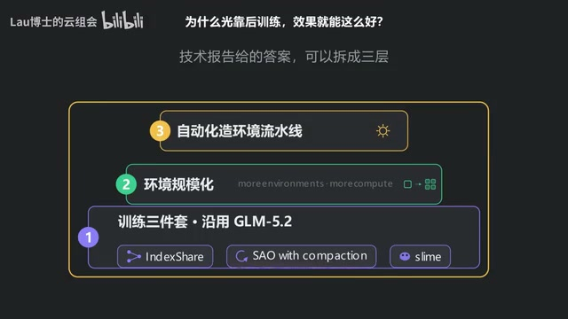
00:01:24–00:01:28 · 画面 03200:01:28–00:01:29 · 画面 033
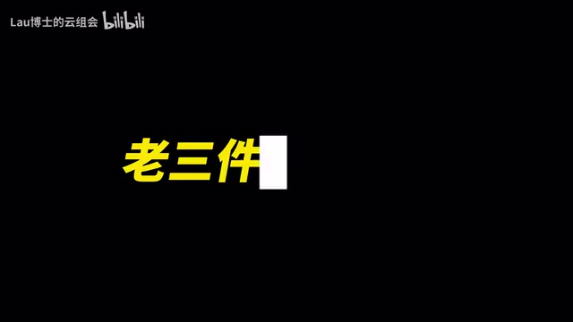
00:01:28–00:01:29 · 画面 03300:01:29–00:01:32 · 画面 034
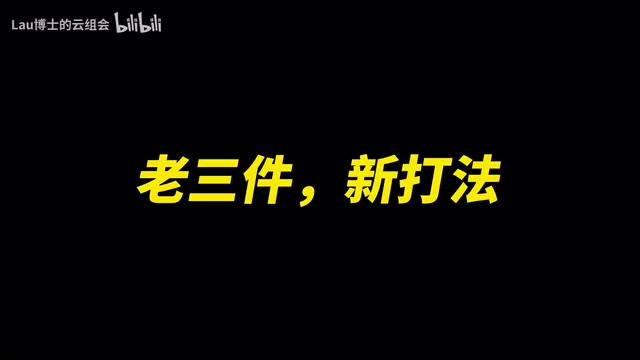
00:01:29–00:01:32 · 画面 034先说三件套在 5.2 时期就已经开始用了这里给还不熟悉的同学快速科普一下详细介绍同学们可以回头看 5.2 那一期第一个是 IndexShare 负责了长上下文 EM context 是什么概念呢?相当于让模型一口气读一整座图书馆 IndexShare 干的事就是让模型读过的书页不用重复读前排后座的计算机结果可以共享又快又省
00:01:32–00:01:34 · 画面 035
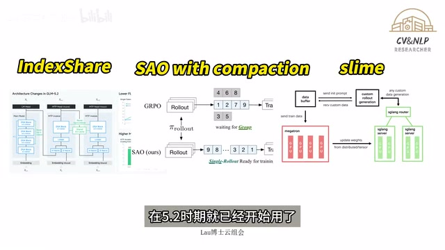
00:01:32–00:01:34 · 画面 03500:01:34–00:01:38 · 画面 036
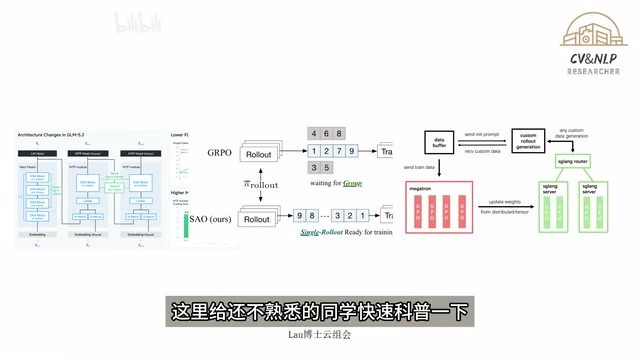
00:01:34–00:01:38 · 画面 03600:01:38–00:01:41 · 画面 037
00:01:38–00:01:41 · 画面 03700:01:41–00:01:45 · 画面 038
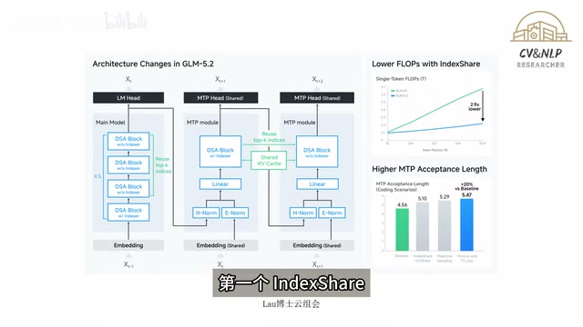
00:01:41–00:01:45 · 画面 03800:01:45–00:01:48 · 画面 039
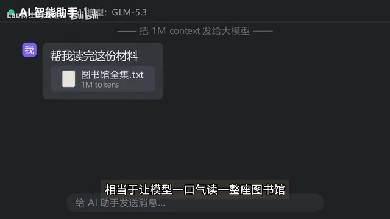
00:01:45–00:01:48 · 画面 03900:01:48–00:01:51 · 画面 040
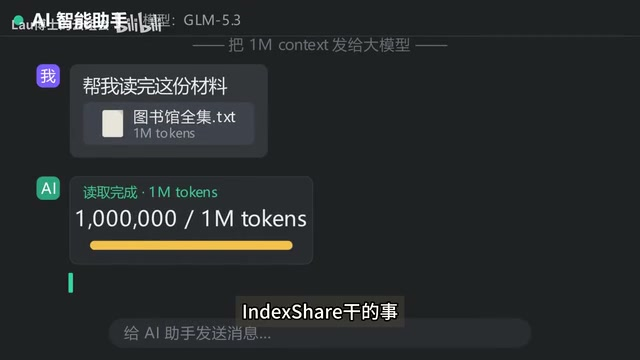
00:01:48–00:01:51 · 画面 04000:01:51–00:01:54 · 画面 041
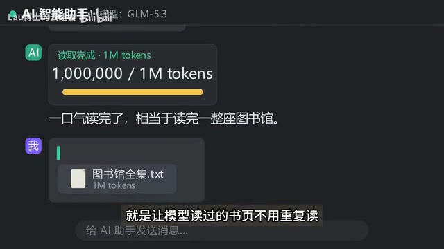
00:01:51–00:01:54 · 画面 04100:01:54–00:01:55 · 画面 042
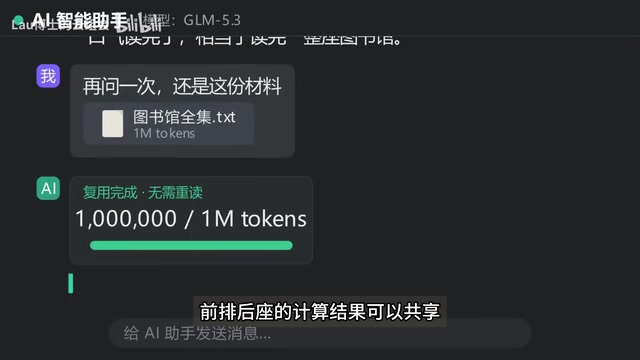
00:01:54–00:01:55 · 画面 04200:01:55–00:01:58 · 画面 043
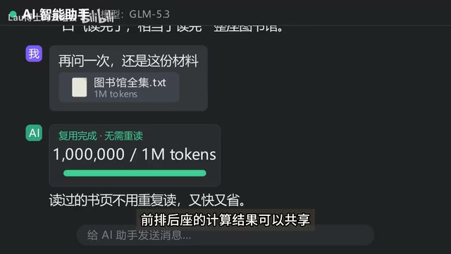
00:01:55–00:01:58 · 画面 043第二个 SAO with Compaction 管长程任务的 RL 训练，RL 在短任务上效果很好，但任务一拉长，奖励信号传着传着就衰减没了。Compaction 的意思是模型跑长任务的时候会边跑边把前面过程压缩成笔记，不让上下文爆炸，奖励就能一路传到几十步、几百步之后。
00:01:58–00:02:01 · 画面 044
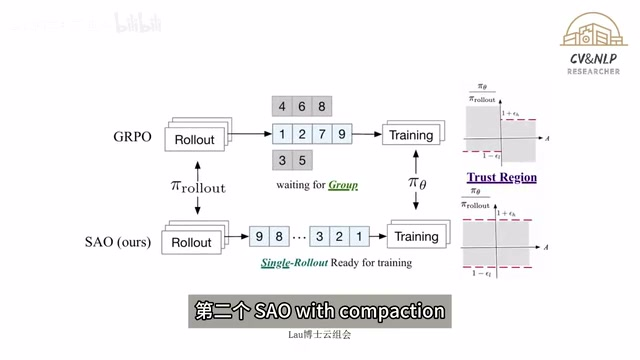
00:01:58–00:02:01 · 画面 04400:02:01–00:02:05 · 画面 045
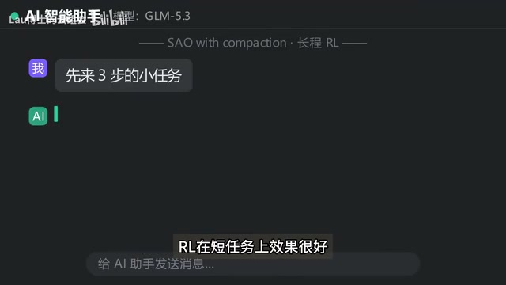
00:02:01–00:02:05 · 画面 04500:02:05–00:02:09 · 画面 046
00:02:05–00:02:09 · 画面 04600:02:09–00:02:10 · 画面 047
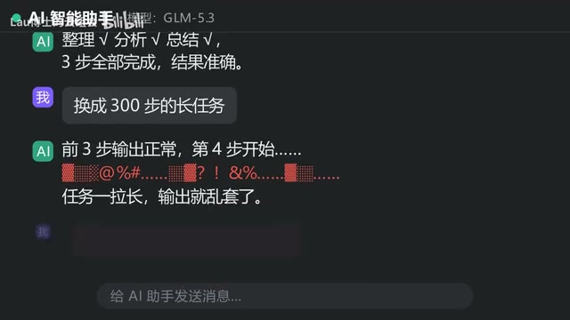
00:02:09–00:02:10 · 画面 04700:02:10–00:02:14 · 画面 048
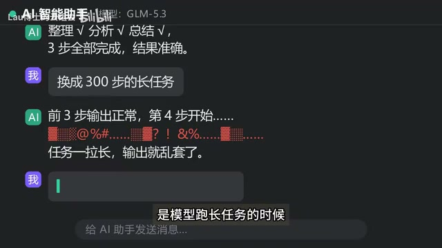
00:02:10–00:02:14 · 画面 04800:02:14–00:02:15 · 画面 049
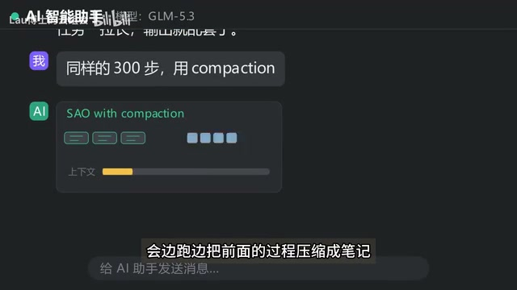
00:02:14–00:02:15 · 画面 04900:02:15–00:02:19 · 画面 050
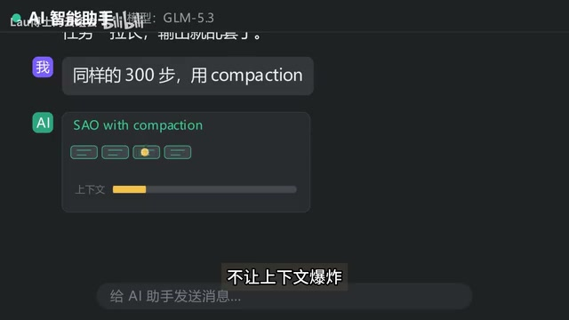
00:02:15–00:02:19 · 画面 05000:02:19–00:02:21 · 画面 051
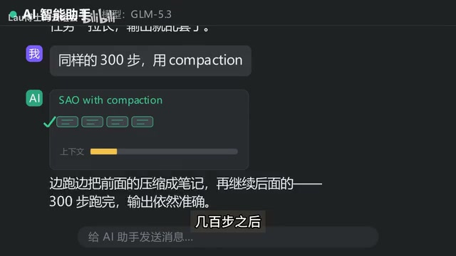
00:02:19–00:02:21 · 画面 051第三个 slime,智谱开源的异步后训练框架，你可以把它理解成一个插线板。数学、代码、沙箱、长城 agent 的环境全部是插件,即插即用。加一种新的环境,不用驱动训练循环本身，有没有感觉跟我们刚刚聊完的 Deep Seek Harness 很像？一切即插件,在上一代的 GA 其实就有了，这三件沿用至今,真正的变化在它们的用法上
00:02:21–00:02:24 · 画面 052
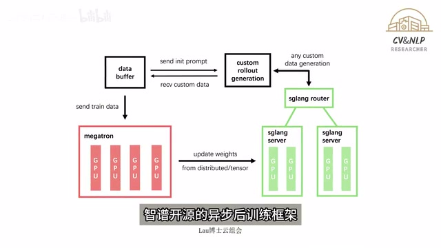
00:02:21–00:02:24 · 画面 05200:02:24–00:02:28 · 画面 053
00:02:24–00:02:28 · 画面 05300:02:28–00:02:32 · 画面 054
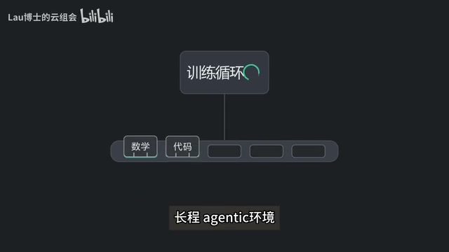
00:02:28–00:02:32 · 画面 05400:02:32–00:02:34 · 画面 055
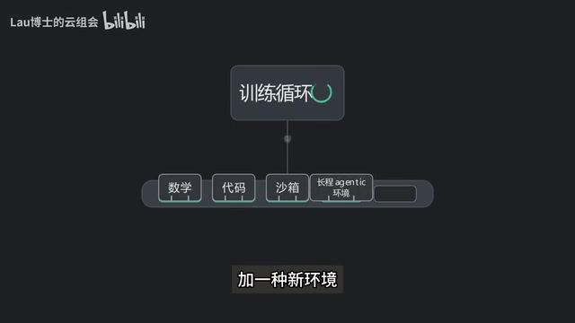
00:02:32–00:02:34 · 画面 05500:02:34–00:02:36 · 画面 056
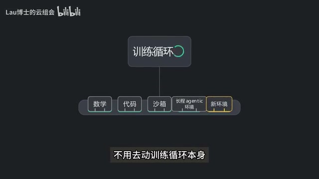
00:02:34–00:02:36 · 画面 05600:02:36–00:02:39 · 画面 057
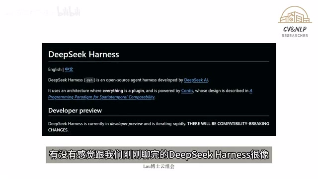
00:02:36–00:02:39 · 画面 05700:02:39–00:02:40 · 画面 058
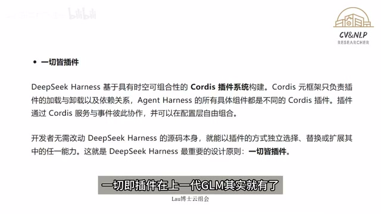
00:02:39–00:02:40 · 画面 05800:02:40–00:02:46 · 画面 059
00:02:40–00:02:46 · 画面 05900:02:46–00:02:47 · 画面 060
00:02:46–00:02:47 · 画面 06000:02:47–00:02:50 · 画面 061
00:02:47–00:02:50 · 画面 061以前 Post-training 给模型做的基本是编程练习题，跟考试刷题差不多，这代换成了什么真实的工程师工作单元。有些任务的体量相当于一位资深工程师干好几天的活。报告里有个例子，一个 ML 基础设施优化任务，模型拿到的环境跟真实算法工程师的工位一模一样，计算集群、存储系统、内部文档、代码库、历史实验结果全摆在里面。前任务是跨整个训练站找瓶颈。
00:02:50–00:02:51 · 画面 062
00:02:50–00:02:51 · 画面 06200:02:51–00:02:52 · 画面 063
00:02:51–00:02:52 · 画面 06300:02:52–00:02:56 · 画面 064
00:02:52–00:02:56 · 画面 06400:02:56–00:03:00 · 画面 065
00:02:56–00:03:00 · 画面 06500:03:00–00:03:04 · 画面 066
00:03:00–00:03:04 · 画面 06600:03:04–00:03:06 · 画面 067
00:03:04–00:03:06 · 画面 06700:03:06–00:03:08 · 画面 068
00:03:06–00:03:08 · 画面 06800:03:08–00:03:12 · 画面 069
00:03:08–00:03:12 · 画面 06900:03:12–00:03:13 · 画面 070
00:03:12–00:03:13 · 画面 07000:03:13–00:03:15 · 画面 071
00:03:13–00:03:15 · 画面 07100:03:15–00:03:18 · 画面 072
00:03:15–00:03:18 · 画面 072自己动手写优化，把实验跑完，最后在保证正确性的前提下交出一个可量化的端到端提出。没人帮你猜问题，也没有用户在旁边一步步教你，从诊断到交付一整块活都是你的。官方有个判断，六博士我很认同，后训练的 scale 的瓶颈已经从模型转移到了环境了。好环境要可执行、可验证、贴近真实工作，而且不能靠手工搭，必须批量生产。
00:03:18–00:03:20 · 画面 073
00:03:18–00:03:20 · 画面 07300:03:20–00:03:23 · 画面 074
00:03:20–00:03:23 · 画面 07400:03:23–00:03:26 · 画面 075
00:03:23–00:03:26 · 画面 07500:03:26–00:03:27 · 画面 076
00:03:26–00:03:27 · 画面 07600:03:27–00:03:30 · 画面 077
00:03:27–00:03:30 · 画面 07700:03:30–00:03:32 · 画面 078
00:03:30–00:03:32 · 画面 07800:03:32–00:03:36 · 画面 079
00:03:32–00:03:36 · 画面 07900:03:36–00:03:37 · 画面 080
00:03:36–00:03:37 · 画面 08000:03:37–00:03:40 · 画面 081
00:03:37–00:03:40 · 画面 08100:03:40–00:03:45 · 画面 082
00:03:40–00:03:45 · 画面 08200:03:45–00:03:46 · 画面 083
00:03:45–00:03:46 · 画面 08300:03:46–00:03:50 · 画面 084
00:03:46–00:03:50 · 画面 084那环境怎么批量照呢？全报告工程含量最高的一段来了一共四步。第一步，Research Agent 负责出题，从真实的工作里收集任务模式，变成带多不依赖带隐藏状态的可运行环境。第二步，Judge Agent 负责验题，每道题他都亲手做一遍，确认真的可解，出题很拍脑袋的不算，裁判自己做出来的才算。第三步最关键，Verifier 负责抓作弊，他出题的时候不许看标准答案。
00:03:50–00:03:54 · 画面 085
00:03:50–00:03:54 · 画面 08500:03:54–00:03:57 · 画面 086
00:03:54–00:03:57 · 画面 08600:03:57–00:04:02 · 画面 087
00:03:57–00:04:02 · 画面 08700:04:02–00:04:05 · 画面 088
00:04:02–00:04:05 · 画面 08800:04:05–00:04:06 · 画面 089
00:04:05–00:04:06 · 画面 08900:04:06–00:04:10 · 画面 090
00:04:06–00:04:10 · 画面 09000:04:10–00:04:11 · 画面 091
00:04:10–00:04:11 · 画面 09100:04:11–00:04:13 · 画面 092
00:04:11–00:04:13 · 画面 09200:04:13–00:04:15 · 画面 093
00:04:13–00:04:15 · 画面 09300:04:15–00:04:16 · 画面 094
00:04:15–00:04:16 · 画面 094只能看 Solver 的答题轨迹去发现模型投机取巧骗分的路子然后一条条堵死第四步把关过了 oracle、no-op、unsolved-state 三重检查的 Verifier 给出了奖励才可靠到能直接进训练说白了这条流水线就是用 Agent 给 Agent 出考卷再让另一批 Agent 出评分标准负责抓作弊
00:04:16–00:04:23 · 画面 095
00:04:16–00:04:23 · 画面 09500:04:23–00:04:25 · 画面 096
00:04:23–00:04:25 · 画面 09600:04:25–00:04:26 · 画面 097
00:04:25–00:04:26 · 画面 09700:04:26–00:04:27 · 画面 098
00:04:26–00:04:27 · 画面 09800:04:27–00:04:29 · 画面 099
00:04:27–00:04:29 · 画面 09900:04:29–00:04:30 · 画面 100
00:04:29–00:04:30 · 画面 10000:04:30–00:04:32 · 画面 101
00:04:30–00:04:32 · 画面 10100:04:32–00:04:41 · 画面 102
00:04:32–00:04:41 · 画面 102RL 做到今天，高质量可验证的环境才是硬通货。当然官方也承认，这条流水线现在还离不开相当规模的人工参与，离权自主还有距离，但雏形已经有了。最后我的观点是，GLM5.3 真正的信号不在哪个板单涨了多少分，而在于它用和 5.2 同一个基座证明了后训练远远没有撞墙。官方有句话，可能我们还远未开发出这个基座智能的上界
00:04:41–00:04:42 · 画面 103
00:04:41–00:04:42 · 画面 10300:04:42–00:04:44 · 画面 104
00:04:42–00:04:44 · 画面 10400:04:44–00:04:45 · 画面 105
00:04:44–00:04:45 · 画面 10500:04:45–00:04:47 · 画面 106
00:04:45–00:04:47 · 画面 10600:04:47–00:04:49 · 画面 107
00:04:47–00:04:49 · 画面 10700:04:49–00:04:50 · 画面 108
00:04:49–00:04:50 · 画面 10800:04:50–00:04:53 · 画面 109
00:04:50–00:04:53 · 画面 10900:04:53–00:04:54 · 画面 110
00:04:53–00:04:54 · 画面 11000:04:54–00:04:58 · 画面 111
00:04:54–00:04:58 · 画面 11100:04:58–00:04:59 · 画面 112
00:04:58–00:04:59 · 画面 11200:04:59–00:05:03 · 画面 113
00:04:59–00:05:03 · 画面 11300:05:03–00:05:05 · 画面 114
00:05:03–00:05:05 · 画面 11400:05:05–00:05:06 · 画面 115
00:05:05–00:05:06 · 画面 11500:05:06–00:05:10 · 画面 116
00:05:06–00:05:10 · 画面 11600:05:10–00:05:13 · 画面 117
00:05:10–00:05:13 · 画面 117接下来我们讲安全，老粉应该知道，我从来不会在论文精读里专门挑一张讲这个。这次讲是因为它确实很惊艳，标题里的 Emergent Cyber Capabilities 是 5.3 这个版本真正的新东西。先说口径，这代在后训练里引入了漏洞发现的数据和环境，能力涨得飞快，原化了 Develop faster than we expect，旺发自己都承认了，远超预期。
00:05:13–00:05:17 · 画面 118
00:05:13–00:05:17 · 画面 11800:05:17–00:05:18 · 画面 119
00:05:17–00:05:18 · 画面 11900:05:18–00:05:20 · 画面 120
00:05:18–00:05:20 · 画面 12000:05:20–00:05:27 · 画面 121
00:05:20–00:05:27 · 画面 12100:05:27–00:05:29 · 画面 122
00:05:27–00:05:29 · 画面 12200:05:29–00:05:33 · 画面 123
00:05:29–00:05:33 · 画面 12300:05:33–00:05:37 · 画面 124
00:05:33–00:05:37 · 画面 12400:05:37–00:05:39 · 画面 125
00:05:37–00:05:39 · 画面 125首先是 CyberGym 纯白盒从源代码找漏洞并验证 84.5 全场第一 ExploitBench 拿 54.4 开源第一但跟闭源的前沿还有明显的差距 ExploitGym 限时利用任务 2 小时完成 105 项上一代只有 29 项整体表现还是非常优秀的
00:05:39–00:05:40 · 画面 126
00:05:39–00:05:40 · 画面 12600:05:40–00:05:44 · 画面 127
00:05:40–00:05:44 · 画面 12700:05:44–00:05:46 · 画面 128
00:05:44–00:05:46 · 画面 12800:05:46–00:05:49 · 画面 129
00:05:46–00:05:49 · 画面 12900:05:49–00:05:51 · 画面 130
00:05:49–00:05:51 · 画面 13000:05:51–00:05:53 · 画面 131
00:05:51–00:05:53 · 画面 13100:05:53–00:05:56 · 画面 132
00:05:53–00:05:56 · 画面 13200:05:56–00:06:00 · 画面 133
00:05:56–00:06:00 · 画面 13300:06:00–00:06:01 · 画面 134
00:06:00–00:06:01 · 画面 134然后是最牛逼的实战环节，先说下情况，这项漏洞都是清华、南开等安全团队借助 GLM 发现的，人事主导模型式工具累计 2436 个漏洞，其中 1097 个中高危，覆盖了 269 个项目，平均一个在被发现前存活了 26.6 年。官方参照全球漏洞赏金市场的公开报价估算，这批漏洞的经济价值约 3000 万元
00:06:01–00:06:04 · 画面 135
00:06:01–00:06:04 · 画面 13500:06:04–00:06:06 · 画面 136
00:06:04–00:06:06 · 画面 13600:06:06–00:06:09 · 画面 137
00:06:06–00:06:09 · 画面 13700:06:09–00:06:11 · 画面 138
00:06:09–00:06:11 · 画面 13800:06:11–00:06:14 · 画面 139
00:06:11–00:06:14 · 画面 13900:06:14–00:06:16 · 画面 140
00:06:14–00:06:16 · 画面 14000:06:16–00:06:20 · 画面 141
00:06:16–00:06:20 · 画面 14100:06:20–00:06:22 · 画面 142
00:06:20–00:06:22 · 画面 14200:06:22–00:06:28 · 画面 143
00:06:22–00:06:28 · 画面 14300:06:28–00:06:29 · 画面 144
00:06:28–00:06:29 · 画面 14400:06:29–00:06:30 · 画面 145
00:06:29–00:06:30 · 画面 145包括发现了微软的三枚重大漏洞，还拿了官方支线。其中关于一款数亿日活的国民级通信软件值得多说一句，安全研究人员借助 GLM 从海量的二进制代码点定位到了异常，拿下了一个 zero-click 漏洞，一条看似正常的消息就能让设备失控。
00:06:30–00:06:34 · 画面 146
00:06:30–00:06:34 · 画面 14600:06:34–00:06:35 · 画面 147
00:06:34–00:06:35 · 画面 14700:06:35–00:06:39 · 画面 148
00:06:35–00:06:39 · 画面 14800:06:39–00:06:40 · 画面 149
00:06:39–00:06:40 · 画面 14900:06:40–00:06:44 · 画面 150
00:06:40–00:06:44 · 画面 15000:06:44–00:06:48 · 画面 151
00:06:44–00:06:48 · 画面 15100:06:48–00:06:49 · 画面 152
00:06:48–00:06:49 · 画面 15200:06:49–00:06:51 · 画面 153
00:06:49–00:06:51 · 画面 153最值得讲的是 DNS，清华借助 GLM 在 1983 年诞生 DNS 协议里发现了一类潜伏了 40 多年的协议级漏洞，问题就出在了协议规则的本身，换哪家实现了都躲不掉。攻击者只需要少量的特殊请求就能把服务器的计算压力最高放大约 8 万倍，网站打不开、邮件中断与服务失效连锁反应一路传导，按网络的测绘估算可能影响全球 9 成。
00:06:51–00:06:53 · 画面 154
00:06:51–00:06:53 · 画面 15400:06:53–00:06:55 · 画面 155
00:06:53–00:06:55 · 画面 15500:06:55–00:06:58 · 画面 156
00:06:55–00:06:58 · 画面 15600:06:58–00:07:00 · 画面 157
00:06:58–00:07:00 · 画面 15700:07:00–00:07:01 · 画面 158
00:07:00–00:07:01 · 画面 15800:07:01–00:07:05 · 画面 159
00:07:01–00:07:05 · 画面 15900:07:05–00:07:08 · 画面 160
00:07:05–00:07:08 · 画面 16000:07:08–00:07:12 · 画面 161
00:07:08–00:07:12 · 画面 16100:07:12–00:07:14 · 画面 162
00:07:12–00:07:14 · 画面 16200:07:14–00:07:18 · 画面 163
00:07:14–00:07:18 · 画面 16300:07:18–00:07:22 · 画面 164
00:07:18–00:07:22 · 画面 164以上主流的 DNS 系统超过了 1000 万处公网的 DNS 服务一个比很多程序员年纪都大的协议全世界看了 40 年没看出来最后给 GLM 实现了同学们可以给这波操作打几分呢?确实是非常夸张 AI 出现之后一切都变了包括网络安全
00:07:22–00:07:23 · 画面 165
00:07:22–00:07:23 · 画面 16500:07:23–00:07:26 · 画面 166
00:07:23–00:07:26 · 画面 16600:07:26–00:07:28 · 画面 167
00:07:26–00:07:28 · 画面 16700:07:28–00:07:32 · 画面 168
00:07:28–00:07:32 · 画面 16800:07:32–00:07:34 · 画面 169
00:07:32–00:07:34 · 画面 16900:07:34–00:07:38 · 画面 170
00:07:34–00:07:38 · 画面 17000:07:38–00:07:40 · 画面 171
00:07:38–00:07:40 · 画面 17100:07:40–00:07:44 · 画面 172
00:07:40–00:07:44 · 画面 172传统艺人，先说说不足吧，这代一牙每把多模态当主打，同学们要拿它来读图分析视频要降低预期，它的技能主要点在了代码和终端里。总结下来三个要点，第一后训练 scaling 还有红利，而且红利的入口变了，GLM5.3 用核 5.2 同义机做证明，瓶颈不在模型在环境，接下来各家卷的是环境工厂
00:07:44–00:07:48 · 画面 173
00:07:44–00:07:48 · 画面 17300:07:48–00:07:52 · 画面 174
00:07:48–00:07:52 · 画面 17400:07:52–00:07:56 · 画面 175
00:07:52–00:07:56 · 画面 17500:07:56–00:08:00 · 画面 176
00:07:56–00:08:00 · 画面 17600:08:00–00:08:05 · 画面 177
00:08:00–00:08:05 · 画面 17700:08:05–00:08:07 · 画面 178
00:08:05–00:08:07 · 画面 178卷它转得快 ，照得真，基座大小反而成了旧话题。第二 ，模型竞争的叙事在变化，从会写代码到能交付复杂任务，再到能守护真实系统，网络安全是第一个高价值样板，这伙以前要顶尖的安全团队排队干。
00:08:07–00:08:10 · 画面 179
00:08:07–00:08:10 · 画面 17900:08:10–00:08:13 · 画面 180
00:08:10–00:08:13 · 画面 18000:08:13–00:08:17 · 画面 181
00:08:13–00:08:17 · 画面 18100:08:17–00:08:21 · 画面 182
00:08:17–00:08:21 · 画面 18200:08:21–00:08:25 · 画面 183
00:08:21–00:08:25 · 画面 183现在模型批量接着干，能把 Agent 的能力接到这种真金白银的场景里，故事才讲得下去。GLM5.3 这次是把样品做出来了，第三,开源真正的优势，Hugging Face 那件事说明闭源模型的安全能力再强，关键时刻可以不对立，开放能本地部署的开源模型，敏感数据不出机房就可以跑了，当然模型作为盾开源了毛的门槛也就降低了
00:08:25–00:08:29 · 画面 184
00:08:25–00:08:29 · 画面 18400:08:29–00:08:33 · 画面 185
00:08:29–00:08:33 · 画面 18500:08:33–00:08:37 · 画面 186
00:08:33–00:08:37 · 画面 18600:08:37–00:08:43 · 画面 187
00:08:37–00:08:43 · 画面 18700:08:43–00:08:47 · 画面 188
00:08:43–00:08:47 · 画面 18800:08:47–00:08:50 · 画面 189
00:08:47–00:08:50 · 画面 18900:08:50–00:08:53 · 画面 190
00:08:50–00:08:53 · 画面 190最后，随着国产模型接连开源，AI 的进化速度已经远超想象了，无论你是否愿意，我们都将成为这个时代的一部分。OK，以上就是本期视频的全部内容，如果对你有所启发，欢迎点赞、投币、收藏、三连、关注云组会，我们下期再见。
00:08:53–00:08:57 · 画面 191
00:08:53–00:08:57 · 画面 19100:08:57–00:08:58 · 画面 192
00:08:57–00:08:58 · 画面 19200:08:58–00:08:59 · 画面 193
00:08:58–00:08:59 · 画面 19300:08:59–00:09:00 · 画面 194
00:08:59–00:09:00 · 画面 19400:09:00–00:09:04 · 画面 195
00:09:00–00:09:04 · 画面 19500:09:04–00:09:08 · 画面 196
00:09:04–00:09:08 · 画面 19600:09:08–00:09:09 · 画面 197
00:09:08–00:09:09 · 画面 19700:09:09–00:09:10 · 画面 198
00:09:09–00:09:10 · 画面 198转写与来源说明 · 0 个自动复核提示
保留 21 个原始语音片段，0 个片段触发自动复核提示。提示仅用于定位可能的术语、重复或识别问题，不等于已确认错误。
讲解画面为源视频截图（640×360），不是可编辑 PPT 文件。全片按每秒 2 帧扫描内容变化，逐步展开页保留；连续动画保留代表画面。清晰度受源视频限制。
原视频：paper/合集_2026-10-16_论文精读/开源第一！把后训练做到极致！GLM-5.3【论文精读】.mp4
SHA-256：8b6f9a51847ab0d72d15e0528644eb5d3c51912adac5548352a6b1c5f12bb9b5
全文按视频语音与画面制作。原论文可从上方链接下载；完整资料包保留全文、原始逐字稿、字幕和校对记录。